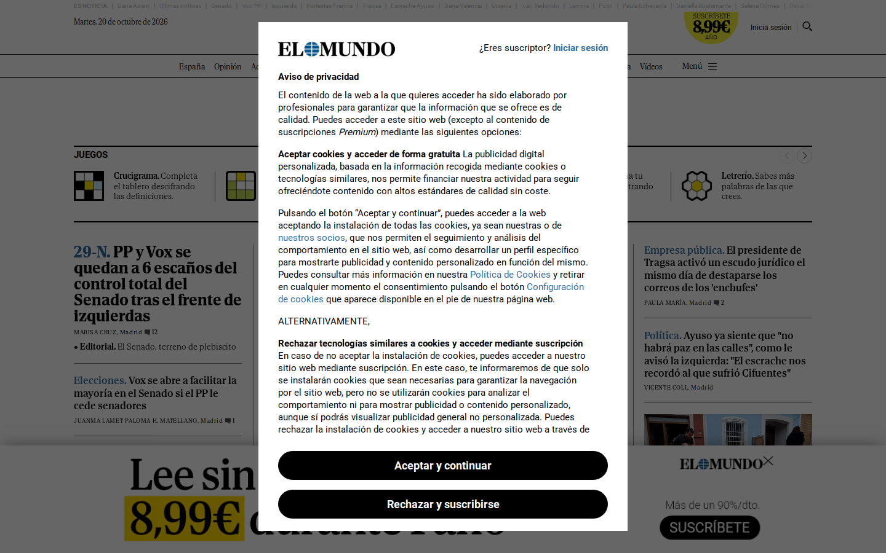
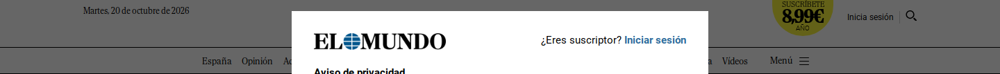
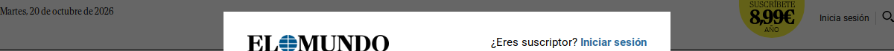

El Mundo
Rubro: Medios y noticias · www.elmundo.es
Por qué es referente: Figura entre los sitios más visitados del país según la fuente citada.
Fuente: Ahrefs · Sitios más visitados de España (jul. 2025)
Compararlo con los demás líderesFotos
- Computadora: 2026-10-19
- Celular: 2026-10-19

Sus partes, una por una
Header · Computadora
El Mundo100 % del ancho · 107 px de alto

Logo · Computadora
El Mundo83 % del ancho · 70 px de alto

Menú · Computadora
El Mundo83 % del ancho · 36 px de alto
Pie de página · Computadora
El Mundo83 % del ancho · 69 px de altoDibujo a partir de las medidas
Barra superior · Celular
El Mundo100 % del ancho · 36 px de alto
Header · Celular
El Mundo100 % del ancho · 36 px de alto
Logo · Celular
El Mundo33 % del ancho · 35 px de alto
Menú · Celular
El Mundo9 % del ancho · 35 px de alto
Botón principal · Celular
El Mundo7 % del ancho · 22 px de alto · bordes 4 px
Pie de página · Celular
El Mundo90 % del ancho · 161 px de altoDibujo a partir de las medidas